7 dias
O Detox 7D é uma experiência acompanhada de sete dias pelo WhatsApp. Você entra em uma turma, recebe os materiais da proposta alimentar e segue as orientações da nutricionista ao longo do período combinado.
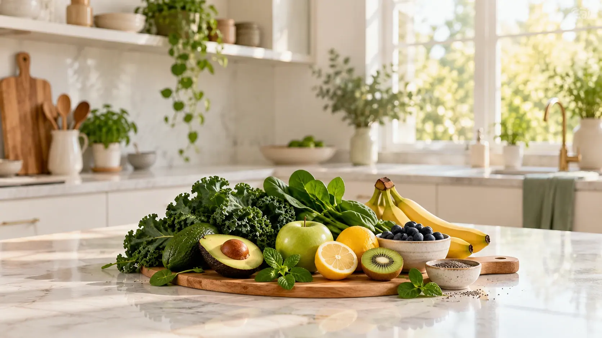
Participe de sete dias de orientação alimentar e acompanhamento coletivo com a nutricionista Kamilla Fertonani, em um grupo de WhatsApp para mulheres que querem começar a cuidar melhor da alimentação e da saúde intestinal.
Você recebe os materiais para seguir a proposta, orientações para colocar em prática e um espaço para tirar dúvidas e compartilhar a experiência com outras participantes.
Detox 7D por R$ 37.
Turmas quinzenais. Os sete dias de acompanhamento seguem o calendário da turma. Confira a data de início antes de concluir a compra.
A roupa aperta ao longo do dia. A sensação de estufamento incomoda. Ir ao banheiro vira uma preocupação. E, quando você procura orientação, encontra tantas dicas diferentes que fica difícil saber como começar.
Você até tenta mudar alguma coisa na alimentação. Mas surgem perguntas: como organizar as refeições? O que preciso comprar? Como seguir essa proposta na minha rotina? Com quem posso esclarecer uma dúvida?
Ter vontade de melhorar e conseguir colocar um começo em prática são coisas que pedem apoio.
O Detox 7D é um convite para dedicar uma semana a esse cuidado, com orientação da Kamilla e uma experiência coletiva para acompanhar você na execução.
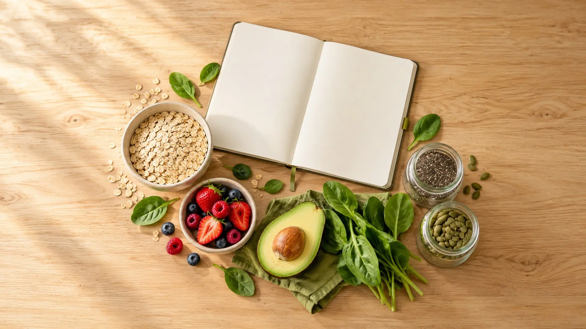
O Detox 7D é uma experiência acompanhada de sete dias pelo WhatsApp. Você entra em uma turma, recebe os materiais da proposta alimentar e segue as orientações da nutricionista ao longo do período combinado.
O valor da experiência está em juntar o que costuma ficar separado: os materiais para consultar, as orientações para aplicar e um espaço para perguntar quando surge uma dúvida.
Você participa com outras mulheres que também querem cuidar melhor da alimentação e do intestino. Cada uma vive uma realidade, mas vocês podem dividir dúvidas sobre a proposta, compartilhar a rotina e se incentivar durante a semana.
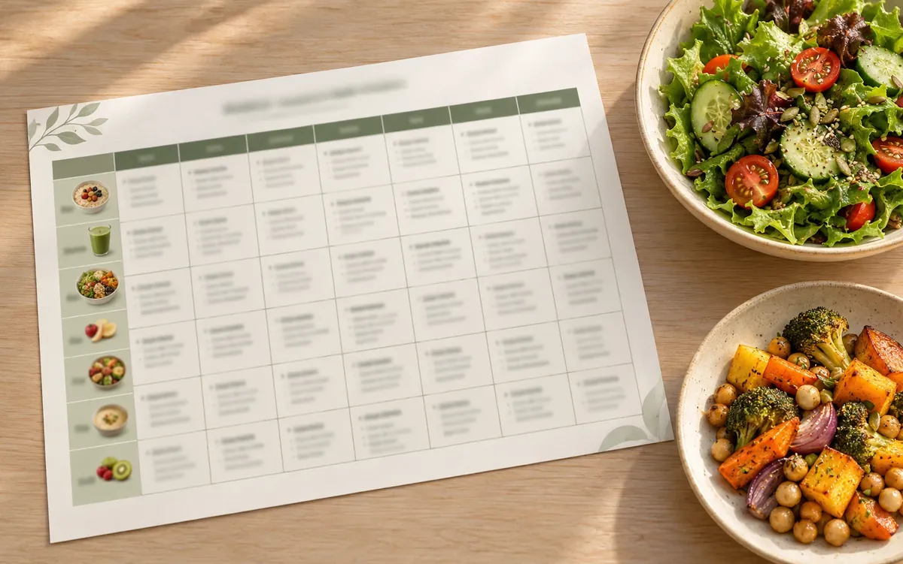
Uma referência para acompanhar a proposta dos sete dias e entender como organizar as refeições durante a experiência.
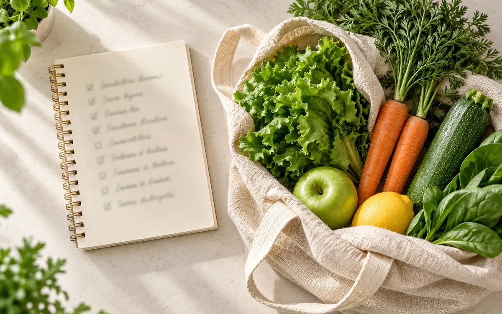
Materiais para consultar as opções previstas na proposta e preparar os ingredientes antes de começar. Você pode levar ao grupo as dúvidas sobre a aplicação dessas orientações.
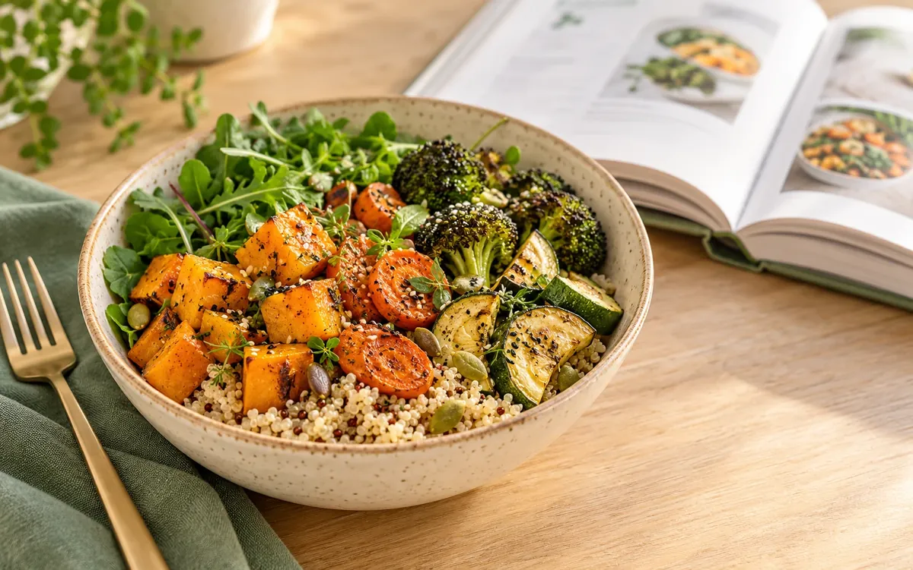
Conteúdos de apoio para usar durante a semana, reunidos para facilitar sua consulta e a execução das preparações.
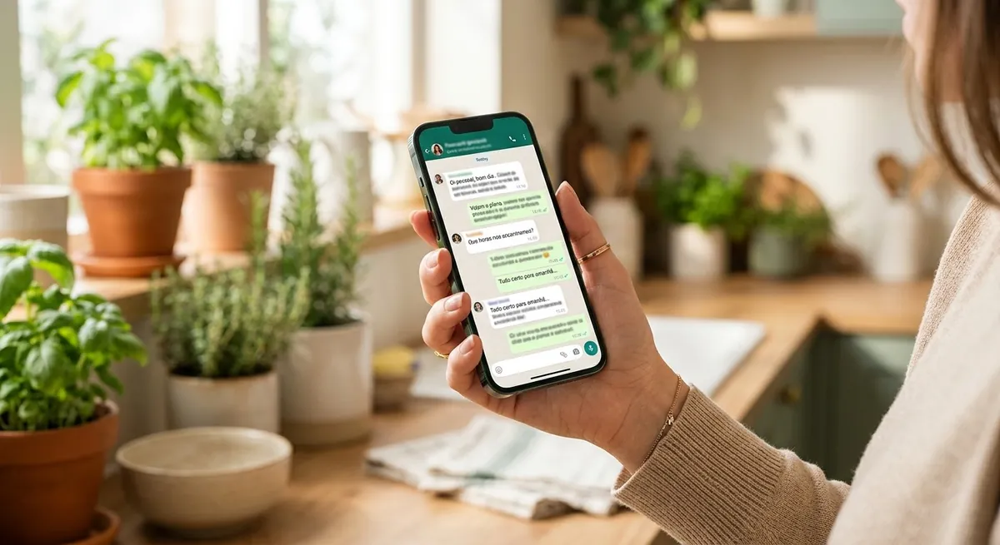
Explicações sobre como seguir a proposta e usar os materiais, com acompanhamento coletivo durante os sete dias da turma.
Um canal no WhatsApp para perguntar sobre a execução do Detox nos períodos destinados ao acompanhamento. Você recebe as regras e os horários da turma nas orientações de participação.
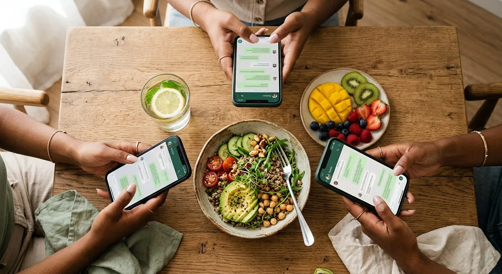
Um espaço para compartilhar a experiência, dividir dificuldades da rotina e incentivar outras mulheres a colocar as orientações em prática. A orientação alimentar é conduzida pela Kamilla; a troca entre participantes é apoio para o dia a dia.
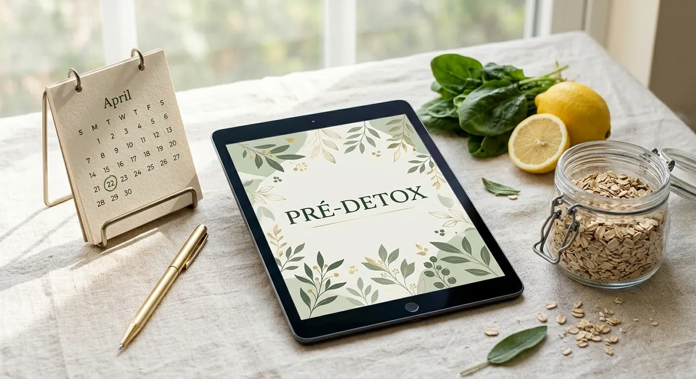
Se você comprar antes da próxima turma, recebe a data de início e o PDF pré-detox com orientações de preparação enquanto aguarda. Os sete dias de acompanhamento começam na data da turma.
Clique no botão de compra, confira a data da próxima turma e conclua o pagamento. A inscrição é paga e dá acesso à experiência descrita nesta página.
Depois da aprovação do pagamento, siga as instruções de acesso. No grupo, você recebe as boas-vindas, o calendário e as orientações de participação.
Consulte os materiais, prepare as compras e acompanhe as instruções. Se houver espera até o início da turma, use o PDF pré-detox conforme as orientações recebidas.
Coloque a proposta em prática, consulte as orientações e leve suas dúvidas ao grupo nos horários de acompanhamento. Compartilhe sua experiência e participe da troca com as outras mulheres.
Às vezes, a dúvida que você tinha também aparece para outra participante. Uma conversa sobre a preparação de uma refeição pode ajudar você a se organizar. Compartilhar uma dificuldade pode tornar mais fácil pedir orientação e continuar participando.
É esse tipo de troca que queremos construir no Detox 7D: um espaço de respeito, participação e incentivo, com a Kamilla conduzindo as orientações da proposta.
Você não precisa chegar sabendo tudo. Precisa estar disposta a reservar esse período para participar, consultar os materiais e colocar as orientações em prática.
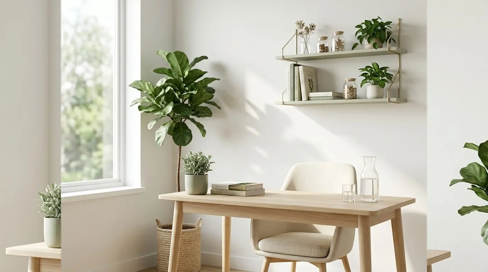

Kamilla Fertonani é nutricionista e trabalha com alimentação e saúde intestinal.
No Detox 7D, ela conduz a proposta alimentar e acompanha coletivamente as dúvidas sobre a execução do programa no WhatsApp, durante o período da turma.
Você tem uma profissional identificada à frente da experiência e um canal definido para acompanhar as orientações.
A experiência é coletiva. Se você precisa de investigação do seu caso, consulta ou plano alimentar individualizado, esse cuidado exige atendimento específico.
Você convive com intestino preso ou inchaço e quer começar a organizar o cuidado alimentar com orientação.
Você se perde entre dicas e quer materiais reunidos para seguir uma proposta inicial.
Você valoriza ter um espaço para perguntar sobre o que está colocando em prática.
Você gostaria de participar junto com outras mulheres e trocar experiências da rotina.
Você está disposta a dedicar sete dias à participação e à aplicação das orientações.
Uma compra reúne:
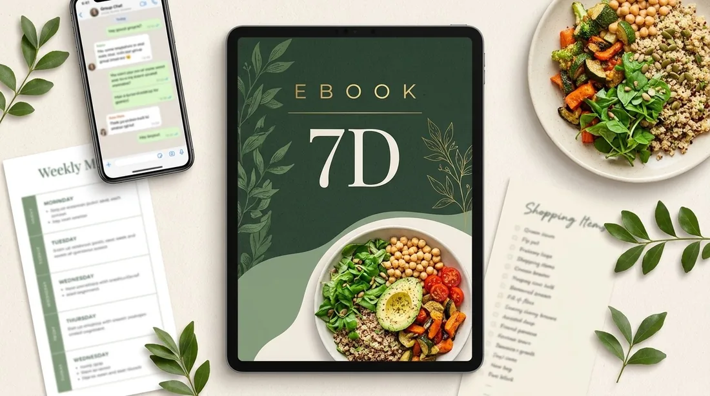
Você está adquirindo a participação no Detox 7D: materiais e orientações alimentares com sete dias de acompanhamento coletivo da Kamilla pelo WhatsApp. Os materiais fazem parte dessa experiência.
O acompanhamento acontece em turmas quinzenais. A compra garante sua participação na turma informada na oferta. Se houver espera, você recebe a data de início e o PDF pré-detox para se preparar. Os sete dias seguem o calendário da turma.
Você recebe os materiais e as orientações para seguir a proposta: preparação, cardápio, substituições e receitas. Durante o acompanhamento coletivo, pode levar ao grupo as dúvidas sobre a execução.
O grupo tem regras e períodos destinados às dúvidas. O acompanhamento não funciona 24 horas por dia. Confira os horários informados para a turma e utilize esse espaço conforme as orientações de participação.
Sim. A experiência é coletiva e inclui a troca entre participantes, com espaço para compartilhar dificuldades da rotina e se incentivar. A orientação alimentar é conduzida pela nutricionista.
O Detox oferece uma proposta alimentar coletiva e acompanhamento das dúvidas sobre sua execução. Consulta, avaliação individual e plano alimentar personalizado são serviços separados.
Não há promessa de aula ao vivo diária. A experiência reúne materiais, orientações e acompanhamento no grupo. As atividades da turma seguem o calendário informado nas instruções de participação.
Os sete dias são a duração do acompanhamento, não uma garantia de resultado. Cada pessoa tem necessidades diferentes. A proposta oferece orientação alimentar e apoio para um começo organizado; não substitui avaliação individual nem investigação de sintomas persistentes.
Não. Sua inscrição inclui os itens descritos nesta oferta. Qualquer continuidade apresentada posteriormente é opcional e contratada separadamente.
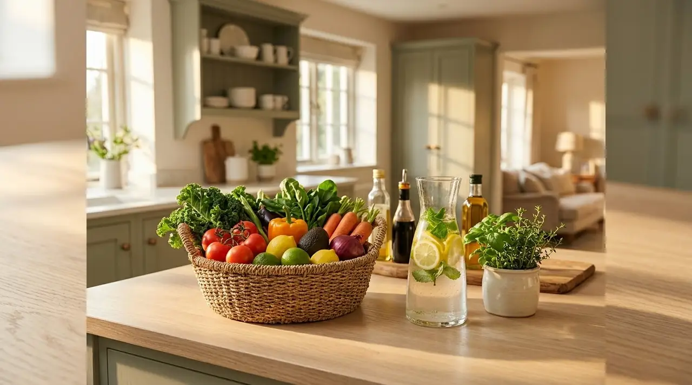
Você pode começar com materiais para consultar, orientação de uma nutricionista e outras mulheres participando junto.
Entre para a próxima turma do Detox 7D e reserve sete dias para colocar esse primeiro passo em prática.
Quero participar do Detox 7D por R$ 37